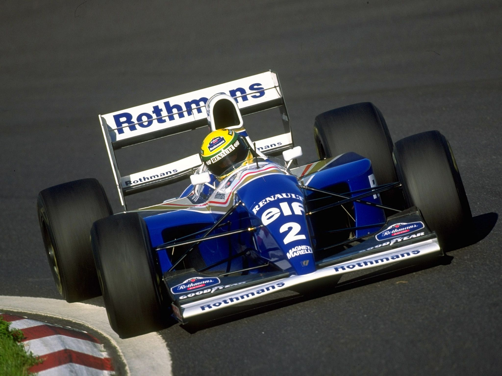
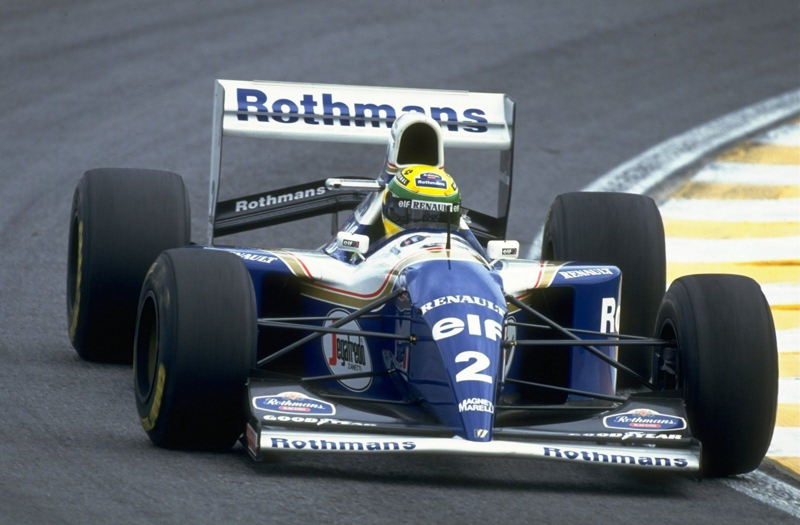
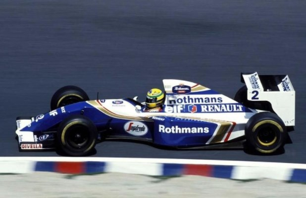
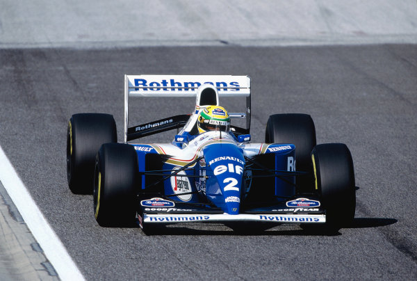
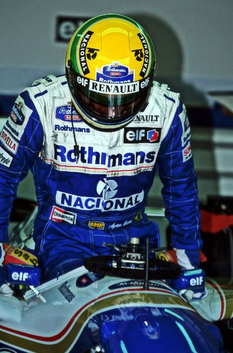

Williams
With Senna's arrival, a new sponsor came as well. Rothmans International came aboard as the primary backer for Williams, with Senna being one of their first drivers in the familiar white and navy livery.





